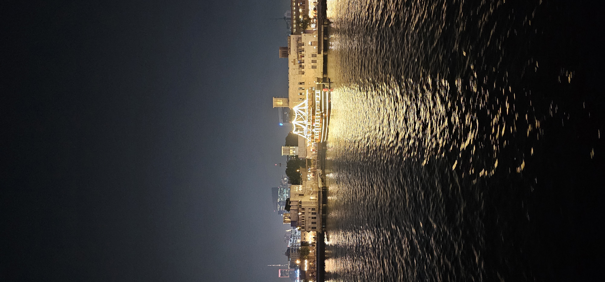

L'encre contre la nuit
J'écris
comme on allume une étoile
dans l'immensité d'une nuit
sans mémoire.
Écrire,
c'est tendre une main
à travers le bruit des jours,
c'est bâtir un pont de lumière
entre deux silences trop lourds.
Non pour vaincre l'obscurité,
mais pour lui rappeler
qu'une seule lueur suffit parfois
à sauver l'horizon.
Chaque mot déposé sur la page
porte un souffle,
un battement de cœur ;
il offre à l'autre un refuge,
une présence plus forte que la peur.
J'écris parce que le cœur
ne consent pas au silence.
Écrire,
c'est aimer sans attendre,
se dévoiler avec pudeur,
confier au monde une parcelle d'âme
pour qu'elle devienne une fleur.
Les mots naissent là
où la voix s'effondre,
dans cette faille secrète
où l'âme apprend à respirer
au milieu des ruines du monde.
Mais écrire,
c'est aussi se lever
quand le mensonge veut régner ;
c'est dire non à l'injustice,
quand tant de voix sont muselées.
Chaque phrase est une traversée.
Les phrases gardent la mémoire
des visages que le temps efface ;
elles refusent l'oubli,
et redonnent un nom aux traces.
Je confie à l'encre
ce que le temps dérobe,
je recueille les visages oubliés,
les regards éteints,
les promesses inachevées.
Aucune chaîne ne peut enfermer
une pensée libre et vivante ;
l'encre traverse les murs,
plus forte que la nuit pesante.
Écrire,
c'est refuser que l'absence
ait le dernier mot.
Ainsi,
écrire est un acte d'amour,
car il rapproche les êtres dispersés ;
et un acte de résistance,
car il défend la dignité,
la vérité
et l'espérance
d'une humanité retrouvée.
L'amour n'est peut-être
rien d'autre
que cette obstination
à rejoindre l'autre
malgré les frontières invisibles,
malgré les distances
que dressent la peur,
l'orgueil ou l'indifférence.
Alors j'écris,
comme on tend une main
sans savoir si quelqu'un la prendra.
Et lorsque le monde
s'habitue à l'injustice,
lorsque le mensonge
revêt les habits de la vérité,
chaque mot sincère
devient une insoumission.
L'encre n'a ni épée ni couronne,
pourtant elle défie
les empires du silence.
Elle ne détruit pas ;
elle révèle.
Elle ne condamne pas ;
elle éclaire.
Car résister n'est pas
seulement dire non.
C'est préserver en soi
la fragile lumière de l'humain,
cette part invincible
que nul pouvoir ne peut confisquer.
J'écris enfin pour demeurer vivant.
Non dans la mémoire des hommes,
mais dans cet instant mystérieux
où une conscience rencontre une autre,
où deux solitudes se reconnaissent
sans jamais s'être vues.
Alors,
si mes mots traversent un seul cœur,
s'ils empêchent une seule nuit d'être
tout à fait obscure,
ils auront accompli leur destin.
Car écrire n'est peut-être rien d'autre
qu'un acte d'amour offert à l'infini,
et une douce révolte contre l'oubli.
Djamel Metref
At Yenni le 2 Août 2026
← Tous les poèmes
L'encre contre la nuit
Écriture et poésie · Résilience et espoir · Liens humains